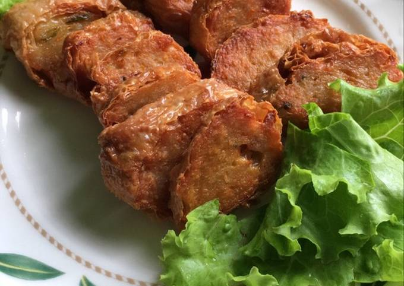

Daftar Isi
Hekeng
Hekeng adalah makanan khas Pontianak, terbuat dari daging udang dan daging babi yang telah dihaluskan kemudian diberi bumbu dan dibungkus dengan lembaran kembang tahu kering, yang biasanya setelah dikukus, dapat disimpan terlebih dahulu didalam lemari es dan dipotong-dipotong jika ingin digoreng untuk disajikan. Hekeng, biasa bisa disebut juga denganNgohiong, yang terkenal juga ada di Bogor, Jawa Barat. Sedangkan Lap Cheong atau Lap Chong adalah daging sosis babi kering, yang biasanya berbalut warna merah. Setelah dipotong tipis, masukan dalam kocokan telur, langsung goreng dalam minyak panas
Cara Membuat
Bahan:
- 300 gr paha ayam giling
- 150 gr udang, kupas, cincang kasar
- 50 gr lemak / kulit ayam giling
- 1 sdt garam
- 2-3 sdm gula
- 1 sdt merica
- 1 sdt penyedap
- 1 sdt bubuk ngohiong (opsional, kalau suka saja)
- 50 ml air es
- 3-4 siung bawang putih, cincang halus
- 4-8 batang daun bawang ukuran kecil bagian putih, cincang halus
- 90 gr tepung tapioka
- 40 gr tepung beras
- 1 butir putih telur
- 1-2 sdm saus tiram
- ½ sdt minyak wijen
- 3 sdm / 40 ml minyak goreng panas
- Kulit tahu
- Panaskan minyak goreng, lalu campurkan ke dalam daun bawang.
- Untuk adonan, masukkan daging ayam dan udang ke dalam mangkuk, lalu tambahkan ½ gula dan garam, aduk hingga berserat dan memutih.
- Tambahkan lemak ayam, aduk rata.
- Masukkan daun bawang, putih telur, bawang putih, tepung tapioka, tepung beras, minyak wijen, saus tiram, bubuk ngohiong, penyedap, garam, gula, dan merica, aduk rata.
- Tambahkan air es, aduk kembali.
- Untuk kulit tahu, lap bersih kulit tahu, lalu potong menjadi 6 bagian.
- Tuang adonan 3-4 sdm di atas kulit tahu, lalu gulung.
- Kukus kekian dengan Tefal Food Steamer Ultra Compact selama 30 menit.
- Setelah matang, keluarkan, lalu goreng utuh kekian dengan Tefal Natural Force Wokpan, goreng hingga kuning keemasan, lalu potong-potong.
- Jika ingin ekstra kering, goreng kembali kekian yang telah di potong, tiriskan.
- Sajikan kekian dengan saus bangkok sebagai pelengkap.
Cara membuat:

Nama lain
Ngo Hiang
Tempat Asal
Fujian, Tiongkok
Daerah
Kalimantan Barat
Bahan Utama
Berbagai daging dan sayur, bubuk lima rempah, kembang tahu
Informasi lain
Sering disajikan pada acara Imlek